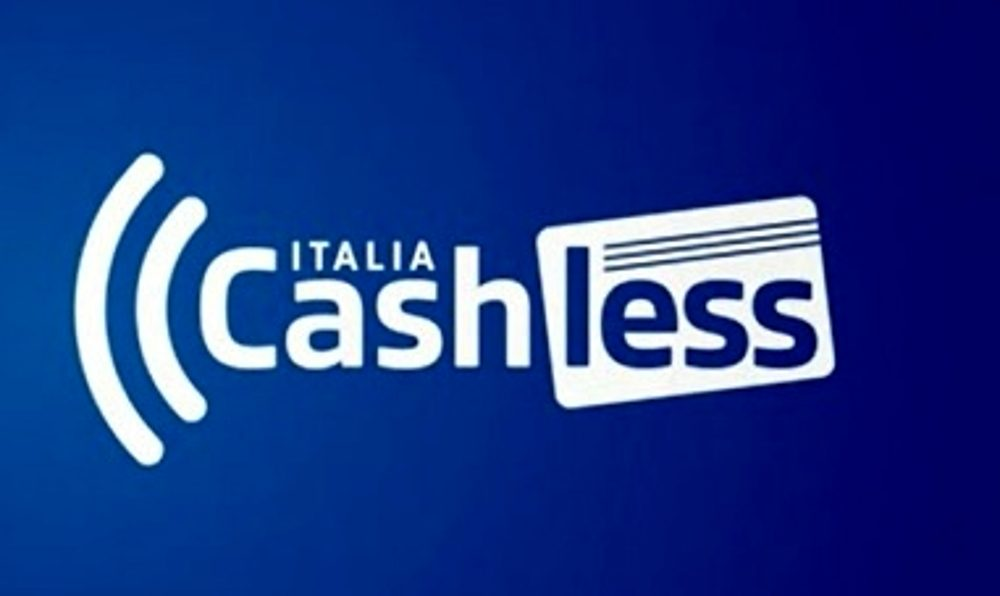

#APPROFONDIMENTI👥
⬆️📌 CASHBACK di Stato - Piano CASHLESS Italia - Cosa sono, e come funzionano?
✅ CACHLESS ITALIA - E' un piano messo a punto dal Governo per incentivare l’uso di carte di credito, debito e app di pagamento, al fine di modernizzare il Paese e favorire lo sviluppo di un sistema più digitale, veloce, semplice e trasparente.
✅ Per attivare il cashback, bisognerà registrarsi, a partire dall'8 dicembre, sull'app IO, mediante Spid o carta di identità elettronica
✅ La prima cosa da fare è assicurarsi di avere Spid (il Sistema pubblico di identità digitale) o la Carta d'Identità elettronica (Cie).
✅ Il passo successivo consiste nello scaricare l’app Io, l’applicazione dei servizi pubblici (io.italia.it). È la stessa già utilizzata per i pagamenti con pagoPa e per il bonus vacanze.
✅ Successivamente, dopo l'avvio del CASHBACK di STATO (l'8 dicembre), vanno abilitate le carte che si utilizzano per i pagamenti. Vanno indicati gli estremi delle proprie carte di credito e bancomat, aggiungendo il codice Iban del conto sul quale si vuole ricevere il rimborso. Sulla app sarà possibile controllare i pagamenti fatti, che danno diritto a ricevere la percentuale di rimborso.
✅Una volta abilitate le carte, occorre fare un minimo di operazioni con pagamenti elettronici: 10 per il mese di Dicembre e 50 nel prossimo semestre. Per pagamenti elettronici s'intende: carte di credito, carte di debito, prepagate e app di pagamento come Satispay (Google Pay ed Apple Pay dal 2021)
✅ Altre informazioni:
- Non vale per gli acquisti online.
- Inoltre il cashback del 10% si fermerà a 15 euro per ogni acquisto e a 150 euro in totale nel periodo interessato.
In pratica se si spendono 250 euro si avranno indietro sempre solo 15 euro. E una volta arrivati al montante di 150 euro i rimborsi non crescono più. - Per i 100mila che faranno più operazioni nei semestri indicati ci sarà una sorta di “superpremio”, un super-rimborso da 1.500 euro.
✅ Cosa cambia da gennaio? Da gennaio i periodi considerati saranno semestrali - da gennaio a giugno, quindi da giugno a dicembre - e i rimborsi arriveranno entro l'agosto e il febbraio successivi. Questa volta però per ricevere indietro il 10% bisognerà fare almeno 50 operazioni anche se i “tetti” di quanto verrà restituito rimangono fissati a 15 euro per singola operazione e a 150 euro complessivamente.
⬆️📌 DI SEGUITO ALCUNI LINK UTILI CORRELATI 👇 :
Se lo desideri, iscriviti ai mie canali social per restare aggiornato ⬇️
Social MediaInoltre se hai trovato utile ed interessante questo articolo, non esitare a condividerlo, a lasciare un tuo mi piace 👍, o seguire la mia pagina Facebook, per sostenermi e continuare ad informare. Grazie anticipatamente a chi vorrà farlo.